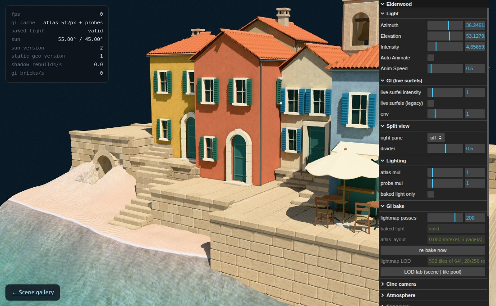

Lighting studio
A classic Cornell box: coloured walls, moving geometry and visible bounced light.
Open studio →VIBE GAME ENGINE · REAL-TIME RENDERING
Explore baked lighting, indirect illumination, soft shadows and cinematic rendering in an experimental WebGPU scene collection.

A classic Cornell box: coloured walls, moving geometry and visible bounced light.
Open studio →A compact architectural scene for exploring the pipeline’s lighting and material controls.
Open village →Explore atmospheric scattering, sun position and cloud lighting.
Open sky →